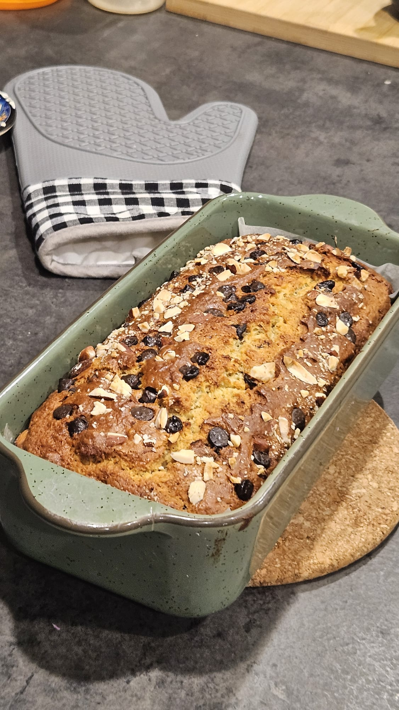

Good food. Real life. Your kitchen.
Less fuss.
More flavour.
A little inspiration for whatever’s on your plate. Simple, comforting recipes that make everyday cooking feel good.
Find your next favourite ↗What are you craving?

THE SLOWER MOMENTS
A little baking.
A lot of joy.
Ripe bananas, a handful of chocolate chips, and something lovely to look forward to. Make a little room for homemade.
Bake something good ↗A NOTE FROM MY KITCHEN
Food doesn’t need to be complicated to be wonderful.
Hi, I’m Asha. I share fast, flavourful Indian recipes and everyday family favourites, for homemade food without the overwhelm.
A little more about me ↗